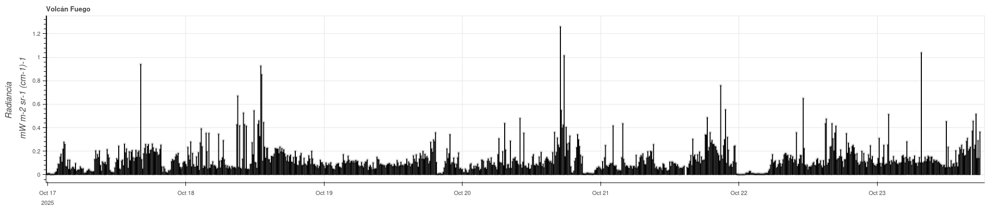
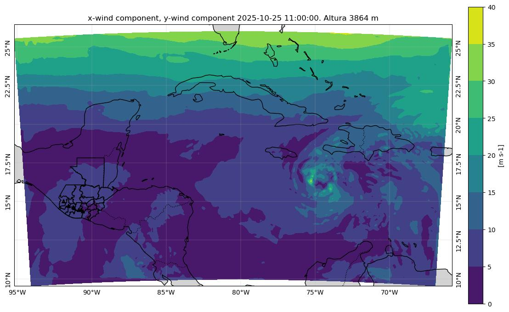
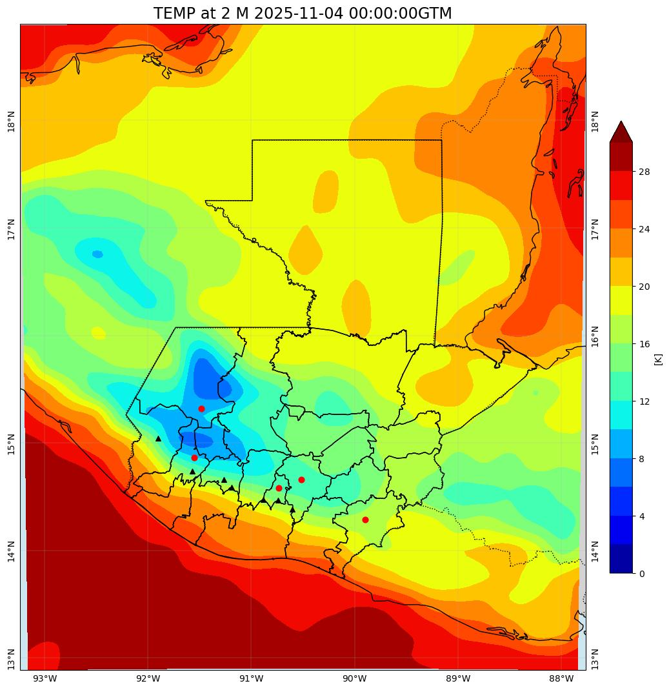
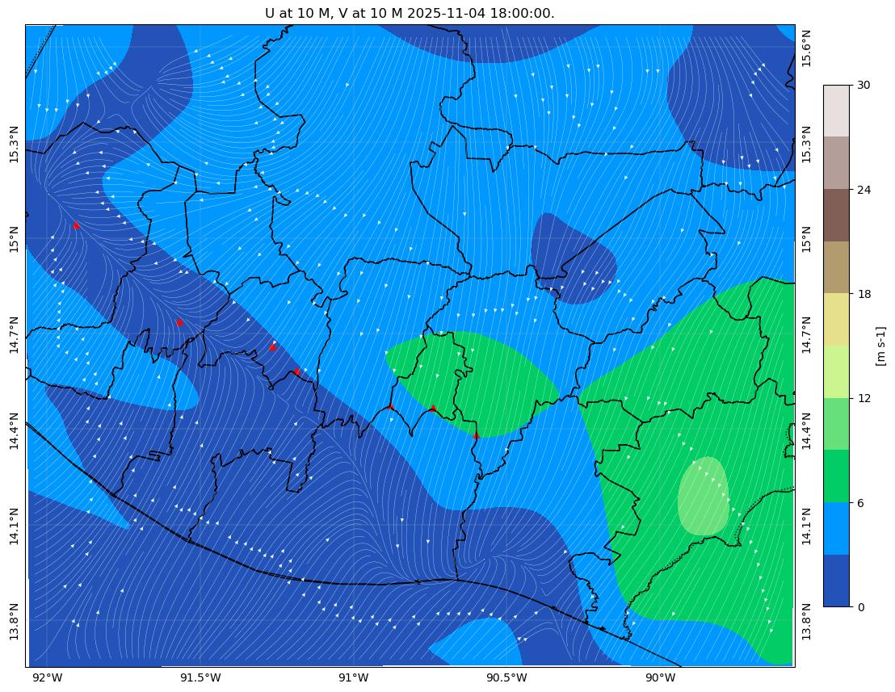

Gráficas de radiancia para regiones que corresponden a los volcanes de Fuego, Pacaya y Santiaguito. Este análisis es muy práctico, pero poderoso para la detección de anomalías. Se pueden caracterizar de forma muy general en anomalías bajas <1, medias entre 1-5 y altas >5 (tema a discutir e investigar).

El acumulado de precipitación por hora, muestra el acumulado de la hora correspondiente no el de todo el intervalo de tiempo.

La temperatura a 2m de la superficie considerando la resolución de cada dominio y la altura de la celda correspondiente.

La dirección y velocidad del viento a 10m sobre la superficie, la altura se calcula a partir de la topografía del dominio correspondiente.